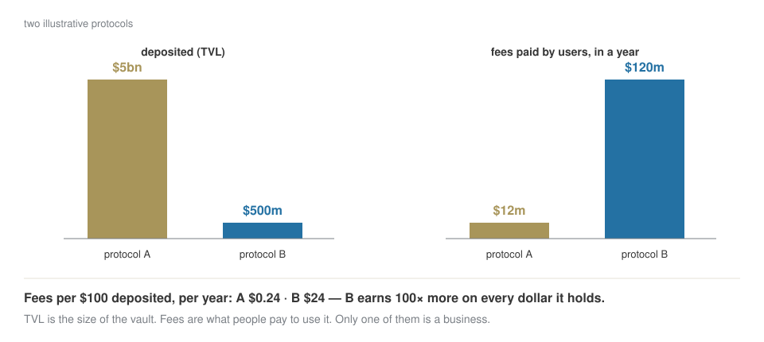
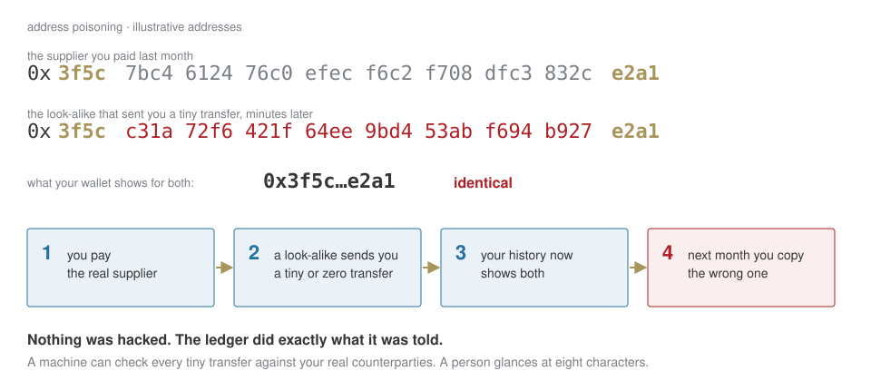

Every payment is public. Nobody reads them all, except a machine.
Week 8 · Wednesday 25 November 2026 · 10:00–13:00
AI for Business and FinTech · European School of Economics, Florence
Where we are
| # | When | What |
|---|---|---|
| 1–5 | 23 Sep – 4 Nov | a model’s release · tokens · look first · read first · agents and harnesses ✓ |
| Mid + 6 | Wed 18 Nov | the oral · crypto from the ledger up · the capstone ✓ |
| 7 | Thu 19 Nov · 15:00 | AI that reads ✓ |
| 8 | Wed 25 Nov | AI that looks at the data |
| 9 | Thu 26 Nov · 15:00 | AI that acts |
| 10 | Wed 2 Dec | capstone studio |
| Rev. | Wed 9 Dec | final presentation |
One thing is due today: three ideas. One of them leaves the room chosen.
Last session, in one slide
In crypto the documents are the product: white papers, governance proposals, audit reports, reserve reports.
We read them with Gemini Notebook. Ten questions found by hand first, then three traps — one a hidden line the model reads and you do not.
MiCA in thirty minutes. A white paper is a legal document: notified, not approved; no promises about future value; the issuer is liable.
Two kinds of stablecoin, EMT and ART; licences; the ESMA register to check who is allowed.
Last week the AI read what people wrote. Today it looks at what people did.
Today
| 10:00 | your three ideas — four questions each, five minutes each |
| 10:25 | the ledger as a dataset — what you can see, what you cannot, what misleads |
| 11:00 | three stories the data told — a bank run, a heist, a typo that cost $68m |
| 11:20 | break |
| 11:30 | lab, 60 minutes — one story, your data, your flag written first |
| 12:30 | what the assistant got right · your capstone, chosen |
| 12:55 | close |
Your three ideas, four questions
| idea 1 | idea 2 | idea 3 | |
|---|---|---|---|
| 1 · Can you open the source today? | |||
| 2 · Ten cases, answers found by hand? | |||
| 3 · Does it fit in two weeks? | |||
| 4 · Still interesting if the answer is no? |
Five minutes each: the decision, who takes it, and the source open on your screen. I fill the grid. We do not choose now — we choose at 12:40, after you have tried looking at data yourself.
Every payment is public. Who paid is not.
Imagine your bank published every statement in the world, forever, with each name replaced by a number. That is a blockchain, read as data.
Part 1 The ledger as a dataset
One transaction, as anyone can see it

▶ Brownworth, Blockchain 101: change one digit in an old block and every block after it breaks. That is what permanent means here.
Pseudonymous, not anonymous
- One person, many addresses. A new one costs nothing; careful people use one per counterparty.
- One address, a million people. An exchange’s wallet mixes all its customers.
- Labels are somebody’s guess. Etherscan, Arkham, Nansen tag known addresses: exchange, fund, hacker. Every label needs a source.
Question
Your salary arrives in USDC, from the same address, every month. A stranger learns one of those payments. What else do they now know?
▶ 3Blue1Brown, But how does bitcoin actually work?: the ledger is the money. There is nothing behind it to look at.
Four series that mean business, and one that misleads
| Series | What it counts | What it tells a business | The trap |
|---|---|---|---|
| Exchange flows | coins into and out of exchange addresses | in: ready to sell · out: holding | labels are guesses; internal moves look like flows |
| Stablecoin supply | dollars minted minus dollars redeemed | demand for on-chain dollars; a run shows as a fall | coins move between chains |
| Fees | what users paid to use it | real demand — the nearest thing to revenue | a panic spikes them too |
| Active addresses | addresses that moved anything today | usage, roughly | addresses are not people; bots inflate it |
| TVL | value deposited in a protocol | size | deposits, not revenue; moves with price; counted twice |
Four of these tell you something. The fifth is the one in every headline.
Which one is the better business?
Bet
Protocol A holds $5bn of deposits and its users pay $1m of fees a month. Protocol B holds $500m and its users pay $10m a month.
Per dollar deposited, how many times more does B earn? 10× · 100× · 1,000×
▶ Coffeezilla on Sam Bankman-Fried’s “box”: a box that is worth more because people put money in it. TVL measures the box.
Size is not revenue

And TVL counts twice: deposit ETH in one protocol, get a receipt token, deposit the receipt in a second — the same dollar, two TVLs. DefiLlama lets you switch the double counting off.
Look first, then ask
The week 3 rule, on a chain:
- Open the series and plot it. Say out loud what you see: the level, the trend, the jump.
- Write your flag or your prediction, dated, in the sheet — before any prompt.
- Give the assistant the same CSV and the same question.
- Score every claim: right, wrong, or unsupported.
A model will always find a story in a chart. If yours is not written first, you will grade its story by how good it sounds.
Four tools, no code
| Tool | What you get | Cost |
|---|---|---|
| Etherscan | any address or transaction, decoded; labels; an address’s history as CSV | free; exports need a free account |
| DefiLlama | TVL, fees, stablecoin supply for every protocol and chain; charts as CSV | free |
| Dune | dashboards other people built on the raw ledger | free to read |
| Your assistant + a sheet | the CSV in a sheet, the question in a chat | what you already use |
All three label addresses. When the assistant says this is Binance, your next question is: who says?
Part 2 Three stories the data told
The SVB weekend, again: this time the timing
Last week you saw the price: about $0.88 on Saturday 11 March 2023, below the $0.92 the arithmetic allowed. Today, the clock.
Sunday evening, the US regulators say every SVB depositor will be made whole. The banks are still shut: nobody can turn USDC into dollars at Circle before Monday morning.
Bet
When does USDC climb back towards $1: Sunday night, on the announcement, or Monday, when the first dollar is actually redeemed?
Four days in March
Sources: Federal Reserve, FEDS Notes, 17 Dec 2025 · Glassnode, The Week On-chain, week 11 2023. Intraday lows differ by source: $0.87–0.88.
Bybit, February 2025: the heist everyone watched
21 February. About 401,000 ETH, ≈ $1.5bn, leaves Bybit’s cold wallet.
The signers saw a routine transfer. Code planted two days earlier in Safe{Wallet}’s web interface made them sign a different one.
Five days later the FBI names North Korea’s Lazarus group and publishes the addresses.
The coins are split across thousands of addresses and several chains. Every hop is public.
On a public ledger, stealing is easy to see and hard to spend. A machine follows thousands of hops in hours; every label it adds is a claim that needs a source.
▶ Antonopoulos, How do I secure my bitcoin?: Bybit had the cold wallet and the multisig. The attack went round both, through the screen.
Address poisoning: spot the difference

May 2024: one victim sent 1,155 WBTC, ≈ $68m, to a look-alike. A week later the attacker returned nearly all of it. Sources: CoinDesk, 3 May 2024; Cointelegraph, May 2024.
One story, your data
LAB · 60 minutes · a sheet and an assistant
- Pick a story: the SVB weekend, the Bybit addresses, or a depeg you choose.
- Open the data: DefiLlama or CoinGecko for prices and supply, Etherscan for addresses. CSV into a sheet.
- Write first: on which day, at which number, would you have raised the alarm?
- Ask: the same CSV and the same question to the assistant.
- Score: every claim it makes — right, wrong, unsupported.
Before you press Enter
LAB · the prompt and the bet
Here is a CSV of [series] from [date] to [date]. What happened, and on which day would you have raised an alarm? For every claim, give the row it comes from.
Bet
Of its first ten claims, how many will be unsupported — said with confidence, with nothing in your file behind them? Write the number now.
Then ask it about a day outside your file. Watch whether it says I don’t know.
What AI adds when it looks — and what it makes up
It adds
- Scale: every transfer, every block, all night.
- Words for hex: exchange, bridge, mixer.
- Outliers: the tiny transfer from a look-alike; the supply that fell by a billion.
- Speed: minutes, not Monday morning.
It makes up
- A cause for every wiggle.
- Memory: “USDC depegged in 2023” from training, not from your file.
- The world off the chain: banks, courts, a phone call.
- Orders from strangers: token names and memos are written by anyone — week 5’s door.
▶ Karpathy, Intro to Large Language Models, the security part: any text the model reads can carry instructions — including text stored on a chain.
On a public ledger, the data is never the problem. The story is.
Part 3 Your capstone, chosen
One idea, five lines
| The decision and its user | who decides what, every week — and what a mistake costs |
| The source | open on your laptop, today |
| The test | ten cases, answers found by hand, three traps |
| The rival | the tool that does no work: the peg holds, always say no, Q3 = Q2 |
| Tonight | the first thing you do |
If you chose a tool that looks, the lab you just ran was its first draft. Keep the sheet.
From today to 9 December
| By | What |
|---|---|
| Thu 26 Nov | the one-page plan — in class |
| Sat 28 Nov | the test, first: ten cases and three traps, dated |
| Mon 30 Nov | the tool, with its model card |
| Tue 1 Dec | the draft — reviewed in the studio, Wed 2 Dec |
| Sun 6 Dec | run, price, write: the memo on Turnitin |
| Wed 9 Dec | fifteen minutes, the tool live |
A narrow tool, well tested, beats a broad one nobody checked.
Close
Tomorrow, Thursday 26 November, 15:00 — your one-page plan: the decision and its user, the source, what the tool does, the test, the rival, the main risk, the steps to 6 December.
Three lines at the bottom of your lab sheet: one on what the ledger shows, one on what it cannot, one on the claim the assistant made that you could not check.
Next: Thursday 26 November, 15:00 — AI that acts. An agent with a wallet, and what you would never let it do alone.
AI for Business & FinTech · ESE Florence